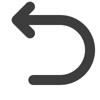

很高兴您能看到这里，感谢您对本站的探索！
这是邵艺，你也可以叫我iyoahs(shaoyi逆序输出结果)。
关于本站
这是一个初学者制作的像素风格的个人主题网站。主题灵感源自日本乐队zutomayo的官方网站。网站主要使用HTML、CSS和JavaScript实现，旨在展示个人介绍并作为本次网站建设与管理课程的大作业。
在网站设计中，我使用了来自Google Fonts、素材中国和阿里的iconfont作为主要字体和图像资源，插画则主要来自推特画师ななみ雪（@yuki77mi）和Kreum（@GuttyKreum）。背景音乐选自乐队yorushika和zutoamyo等。
本网站将通过GitHub和Gitee进行静态网页托管。有关网站链接和使用的资源，查看文末或者代码仓库。
灵感、想法
在构思这个网站的初期，我参考了zutomayo乐队的官方网站设计，并决定结合像素游戏风格来打造这个网站，以此为主题寻找相关素材。
在主页的设计中，我选择了不同的主题颜色搭配不同的gif背景，通过消息框的形式来呈现主要内容。留言框和个人介绍框则是复刻了zutomayo官网上可拖动的复古消息提示框，我个人认为这个设计非常有趣。
对于个人介绍框，我采用了信封交互的方式，通过弹出的信件来增强网站的交互性。而留言框则借鉴了聊天室的设计思路，以提升用户之间的交流体验。
照片墙和动画推荐部分的设计理念是一致的，点击相应的图片可以改变背景，以适应不同的主题。最后的音乐推荐则是灵感来源于手机音乐播放器的设计。
资源以及相关链接
- 像素字体下载（中文） IPix-Chinese
- 像素字体下载（英文） PressStart2P
- github 静态网页托管
- gitee 静态网页托管